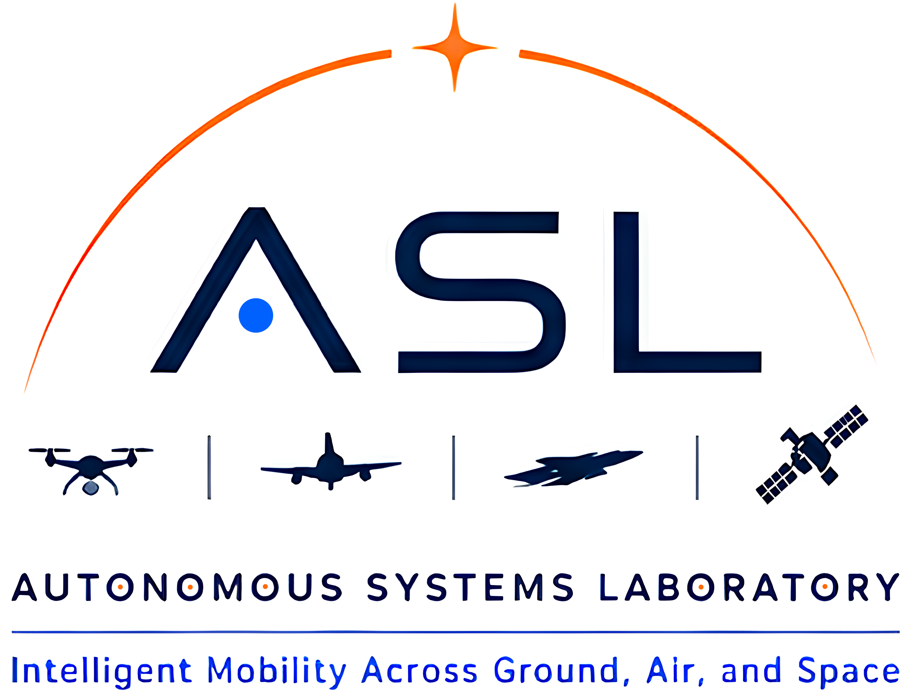
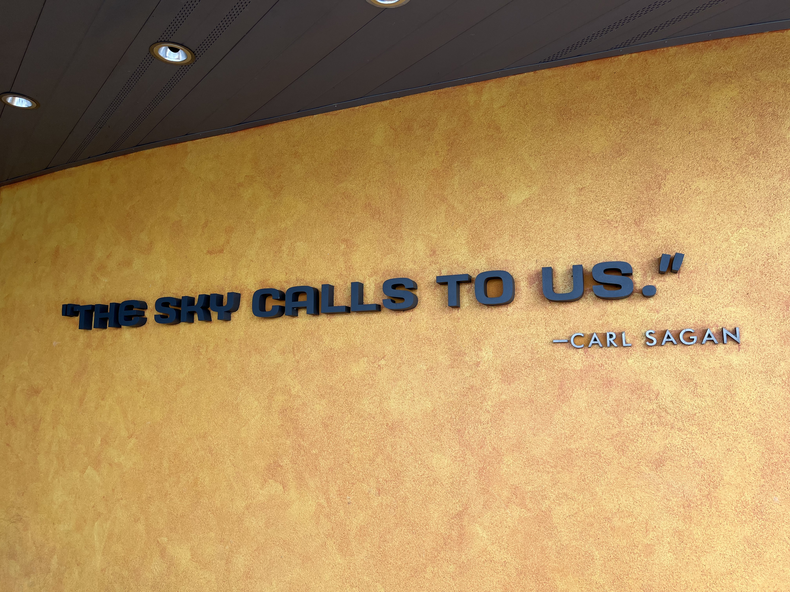

Number of visitors:
The Autonomous Systems Laboratory (ASL) is affiliated with the Department of Mechanical and Aerospace Engineering at the University of Tennessee, Knoxville. Our mission is to investigate highly efficient computational methods to improve and optimize the performance of complex dynamical systems. Our emphasis is placed on developing and testing novel control, optimization, and machine learning approaches for highly efficient vehicle systems.
Our current research interests include:

Zhenbo Wang, Ph.D.

Associate Professor
311 Dougherty Engineering Building
1512 Middle Drive, Knoxville, TN 37996, USA
Phone: 865-974-9352 (office)
Email: zwang124@utk.edu
Number of visitors: